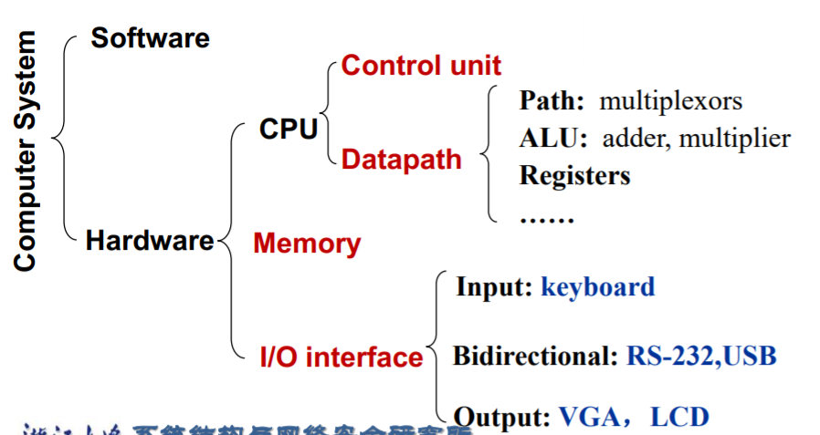
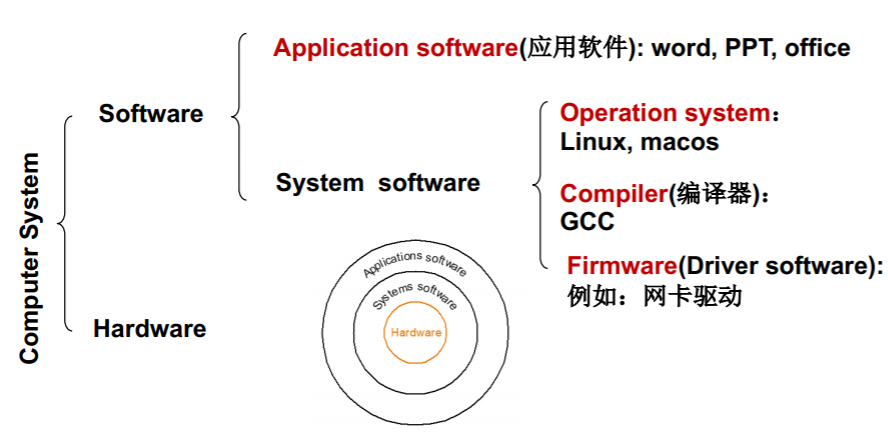
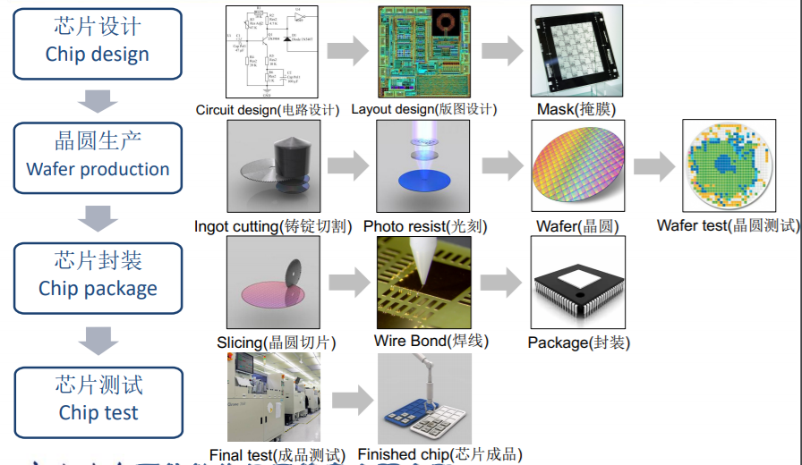

Introduction
Development
电子管
计算和存储分离/可编程/图灵完全
晶体管
体积变小，速度更快/编程语言从二进制机器码到汇编语言
集成电路
还随之诞生了许多的操作系统
大规模集成微处理器（micro processors）
个人计算机兴起
RISC Architecture
Reduced Instruction Set Computer
一种指令集，指令长度一定/执行所需的时钟周期较少—>提高编译和运行效率
risc指令集架构和risc-v是要区别开的，后者基于前者；比如arm也是RISC的
A definition on computer
Computer is an electronic device that manipulates data according to a list of instructions (program), with capability of Turing machine.
- Electronic realization(at least now)
- ISA
- Instruction Flow(Execution of a pre-recorded list of instruction)
- Storage(data and instructions)
- Turing-complete
Computer organization
Hardware

CPU
data path
control unit
command the data-path, memory and I/O devices according to the instruction flow.
I/O interface
output
LCD screen(像素计算)
storage
- Main memory
- it is volatile
- DRAM
- Second memory
- it is nonvolatile
- flash or solid state memory/ hard disk
Software

软件一般用高级语言编写，往往需要经过编译，才能变成可执行的机器码。
HHL-（compile）->symbolic language-(assemble)-> machine code
ISA
软件和硬件的接口。只要指令集一样，硬件能够对该指令集正确反应，那么软件编译以后就能在不同的硬件平台上跑。（类比：军队作战，来自不同地方存在语言差异的士兵，在接受统一的旗号后，长官就可以让士兵很好地去战斗部署。旗号，就是一种接口，起到隐藏封装的作用）
Processors
produce

slicer（切片） die(模具)
some parameters
- yield: proportion of working dies per wafer
- yield = 1/(1 +( defects per area die area/2))*2
- cost per die = cost per wafer/ (dies per wafer * yield)
Computer design: performance and idea
Response Time and Throughput
Response time(响应时间)
how long it takes to do a task
Throughput(吞吐率)
Total work done per unit time
performance
define performance = 1/response time
Elapsed time
total time: my processing time, I/O, OS overhead, idle time
CPU time
Time spent processing a given job: Discounts I/O time, other jobs’ shares.
include user CPU time and system CPU time.
clock cycle
etc. 250ps ==> 4GHZ(4*10^9 HZ)
CPU time = CPU Clock Cycles * Clock Cycle Time
= CPU Clock Cycles / Clock Cycle Rate
Hardware designer must often trade off clock rate against cycle count
Given Clock Cycles = Instruction Count * Cycles per Instruction， we introduce a new concept called CPI(and we have a concept called AVG.CPI)
Then, CPU time = SUM(Instruction Count_i CPI_i) Clock Cycle Time
程序是什么？到底层不过是指令流。一个程序的CPU时间，自然地归结为该程序的指令流所消耗的时间。我们要这样细分，是为了寻求优化系统的角度。
Depends on
- Algorithm
- Programming language
- Compiler
- ISA
power
power = 1/2 Capacitive load Voltage^2 * Frequency
我们要提高性能，但是散热不允许，硬件设计者发展了多核/乱序执行。但是多核提高吞吐率的时候，带来了如何精确地并行处理的问题。
SPEC Benchmark
SPEC CPU Benchmark
SPEC Power Benchmark
Pitfall: Amdahl’s Law
$T_{improved} = T_{affected}/improvement-factor+T_{unaffected}$
优先提高占比高的。不可优化的就是下界。
MIPS(millions of instructions per second)
$MIPS=Instruction_count/(execution-time10^6)=Clock-rate/(CPI10^6) $
Thoughts
- design for Moore’s LAW
- Use abstraction to simplify design
- make the common case fast
- parallelism
- pipelining
- prediction
- hierarchy of memories
- dependability via redundancy
Hope you like this blog or find it useful for you!If the images or something else used in the blog infringe your copyright, please contact the author to delete them. Thank you !